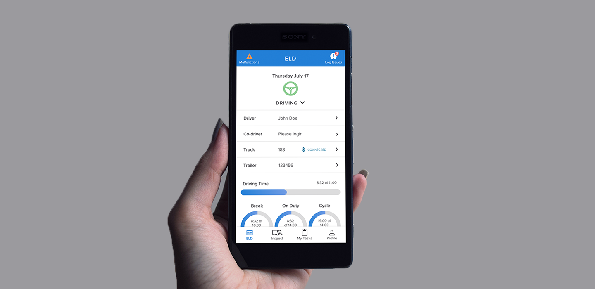
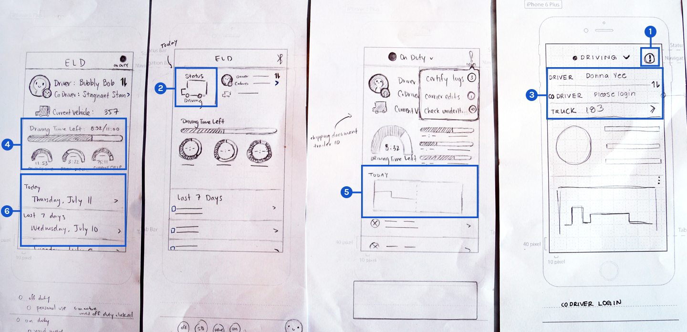
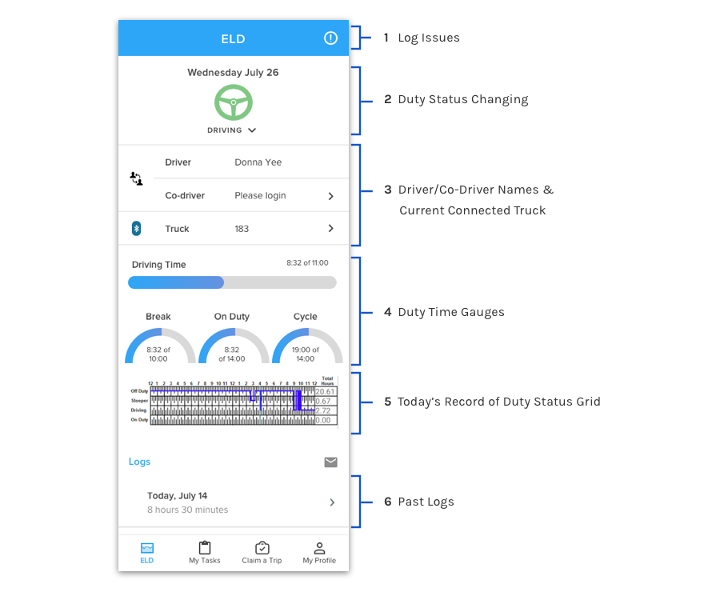
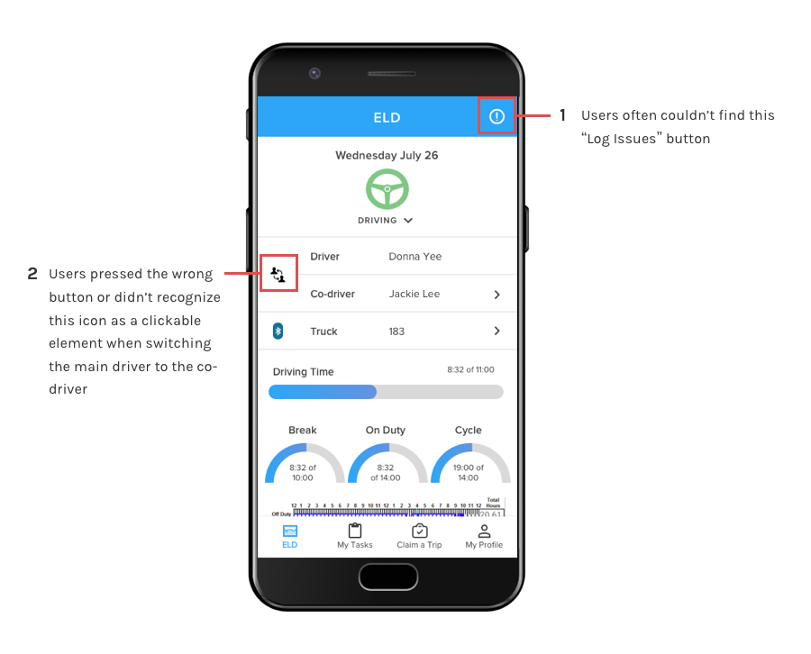

UNIS Drive - ELD
Summer 2017 - Launched in Dec 2017

UNIS Drive is a mobile app aimed to help company truck drivers more easily complete their day-to-day tasks. This case study specifically focuses on the ELD (Electronic Logging Device) portion of the app. ELD helps solve the issue of drivers having to log their hours of service on paper by allowing them to accurately track and manage their hours in the app. I collaborated very closely with the product owner, engineering team, and fellow UI/UX Designer, Jackie Lee, from concept to launch.
Tools: Pen and paper, Sketch, Marvel, Zeplin, Abstract
View on Google Play Store
- Gathered and understood government mandate and compliance requirements
- Ideated different solutions on paper
- Picked the best ideas and helped translate them into Hi-Fi prototypes in Sketch
- Created a document of all possible erroneous situations
- Made interactive prototypes in Marvel
- Conducted user testing
Certain truck drivers that drive long distances must follow a strict driving schedule so that they are compliant with hours of service regulations set forth by the FMCSA (Federal Motor Carrier Safety Administration). The original method of logging these hours was by paper (seen below). However starting December 2017, all logs must be electronically reported through an Electronic Logging Device (ELD). In order to solve this need, our company decided to create their own ELD app.

The UX researcher interviewed company drivers and created user personae which I used to inform my design decisions.
Since the user research had already been completed, I continued to research the business requirements by speaking with the company Safety Manager, Luis, and the expert on the FMCSA mandate requirements, Todd.
User Requirements
- Large buttons and text
- High contrast colors
- Large touchable areas (at least 44 px)
- Ability to easily change between duty statuses
- Automate the tedious work of paper logs
- View important information at a glance
Business Requirements
- Ability to log and switch between the following duty statuses: On Duty, Off Duty, Sleeping, Driving, Yard Move, and Personal Use
- Ability to certify accuracy of driver logs
- Ability to add and edit driver logs
- Ability to accomodate a co-driver
- Keep drivers within hours of service compliance
After gathering the requirements and understanding the problem, Jackie and I broke down this information by sketching out different designs to fulfill the business and user needs.
We each ideated 2-3 screen ideas for each major requirement and came back together to share them with each other. During this process we identified reusable UI elements and consolidated them into symbols in Sketch. This helped cut down on time wasted when translating our design from low to high fidelity and from high fidelity to development.

We picked the best ideas from each other’s sketches and combined them into a single design. One major requirement we ideated was the elements on the home screen. We made sure to keep all the important information on one screen so that it’s easily accessible to drivers.

Using my background in Computer Science, I created a reference document with all the possible edge cases we needed to design for, such as the error state, empty state, and filled state.
We decided that it was best to test within our company first to discover the more obvious issues, fix those, and then test with drivers. Two major insights we found when testing internally:

I then rectified these issues through several iterations.
After refining our designs, we had actual company drivers test our prototype. I created an interactive Marvel prototype using our modified high fidelity mockups for user testing.
One major issue we discovered was that there were currently “too many pages to go through just to add a note”. We realized that we had overlooked a major part of the paper log process: the ability to write a note about why they switched to a particular duty status. We had this feature, but it was a bit “hidden” because we didn’t realize how important and frequently used this feature would be.
Iterate, Iterate, Iterate!
We touched up the final iteration based on user feedback, and were finally able to pass it over to the developers. Here is a preview of what the fully developed design looks like:
Learnings
This project taught me A LOT of things.
- The importance of gathering requirements before designing
- Version control is a very powerful and useful tool for both developers AND designers
- Having a style guide with reusable elements make design and hand off to developers much easier and faster
- As a designer, I can only speculate what a user would want. User testing gives important insight into what is actually useful for a user.